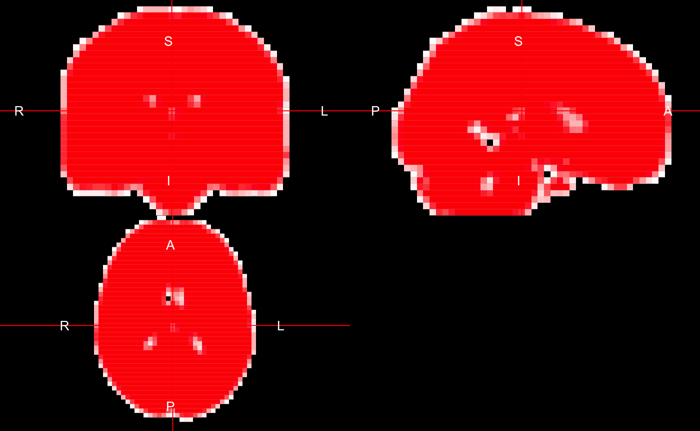

cc_w_package.Rmdmaskpath <- "../data-raw/MNI152_T1_2mm_brain_mask.nii.gz"
template <- fslsub2(maskpath, intern = TRUE)
template <- template@.Data[1:40+3,1:48+3,1:34+6]
mask <- template
mask[mask < 0.1] = 0; mask[mask > 0.1] = 1list_files: Extract complete-case filelists and subject ID’sThe neurorct package provides a function list_files that recognizes the ID of patients with both baseline and follow-up imaging data. list_files returns a list of length 3 - baseline images, follow-up images, and ID’s.
folderpath = './con_0001/' # replace this with your local folder that contains images
filelist = list_files(folderpath)
bl_filelist = filelist[[1]]
fu_filelist = filelist[[2]]
id_cc = filelist[[3]]id_cc
#> [1] "58002" "58018" "58022" "58024" "58028" "58032" "58034" "58035"
#> [9] "58039" "58041" "58043" "58045" "58051" "58052" "58056" "58062"
#> [17] "58065" "58068" "58074" "58076" "58077" "58078" "58085" "58092"
#> [25] "58093" "58095" "58097" "58106" "58110" "58113" "58114" "58128"
#> [33] "58135" "58140" "58146" "58154" "58156" "58157" "58174" "58181"
#> [41] "58189" "58190" "58197" "58206" "58213" "58214" "58221" "58226"
#> [49] "58233" "58234" "58236" "58247" "58263" "58265" "58269" "58271"
#> [57] "58277" "58279" "58281" "58288" "58289" "58292" "58298" "58304"We can generate design matrix using the ID’s above. We import the csv file of group assignment for all the subjects, including those with missing image.
group_assignment = read_csv("../data-raw/group_assignment.csv")
head(group_assignment)
#> # A tibble: 6 x 2
#> subject_id random_group
#> <dbl> <dbl>
#> 1 58001 2
#> 2 58002 1
#> 3 58005 1
#> 4 58008 2
#> 5 58011 1
#> 6 58012 2The design matrix is made by keeping all the complete-case subjects.
import_image: Import imaging dataThe import_image function imports image data from the folder that contains individual imaging files. Mask can be specified using maskpath argument. If complete = TRUE, only images for complete data analysis are imported. Subsampling by factor of 2 can be done if user’s local environment allows and sub2 = TRUE. Here we use subsampling for the sake of computation power.
img_data <-
import_image(folderpath = './con_0001/',
maskpath = './MNI152_T1_2mm_brain_mask.nii.gz',
complete = TRUE,
sub2 = TRUE)datamat_bl_CC = img_data[[1]]
datamat_fu_CC = img_data[[2]]
dims = img_data[[3]]; dims
#> [1] 40 48 34
dim(datamat_bl_CC)
#> [1] 30382 64The function returns baseline data and follow-up data in 2D matrices with dimensions number of voxels * number of complete-case subjects. In other words, each row in the matrix represents a subject, and each column represents a voxel. It also returns the dimensions of the original 3D image. In the above example, there are 64 subjects and 30382 voxels for each subject. The data is ready for the following linear regression.
fast_lm: Fast linear regressionfast_lm can be used to conduct fast linear regression of voxel-level difference on random group assignment. The function returns regression coefficients and degrees of freedom. The following example first calculates change-score, and then does linear regression without adjusting for baseline image. x_matrix is the design matrix generated above.
datmat_diff = datamat_fu_CC - datamat_bl_CC
lm_result = fast_lm(x = x_matrix, y = datmat_diff)
lm_result$df
#> [1] 62
tmaps = lm_result$tmap
tmap_group = lm_result$tmap[,2]fast_lm also supports adjusting for baseline image. The code is shown below.
bl_adjust = fast_lm(x = x_matrix, y = datmat_diff, bl = datamat_bl_CC)Now we plot the ‘tmap’ of group assignment.
tmap_array = array(0, dim = dims[1:3])
tmap_array[mask==1] <- tmap_group
range(tmap_group, na.rm = T)
#> [1] -3.156687 3.697510template = fslsub2("./con_0001/Exercise58_FLANKERS_spm8_P00058002_S0001_con_0001.hdr")
template@.Data = tmap_array
maxvar = ceiling(max(abs(range(template, na.rm = TRUE))))
library(gplots)
#>
#> Attaching package: 'gplots'
#> The following object is masked from 'package:stats':
#>
#> lowess
ortho2(mask, template, col.y = bluered(200), ybreaks=c(-100:100)/100*maxvar)